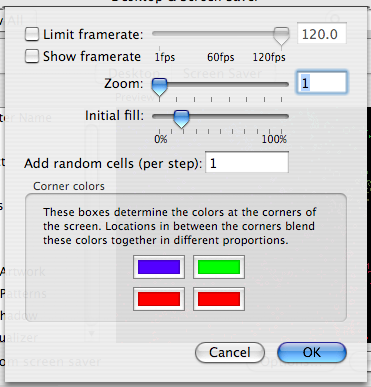

But it may be one of the fastest....
This Life screensaver runs almost entirely on your graphics card. The logic is written as an OpenGL shader, with just a bit of extra programming to glue it all together. This screensaver gets 22fps on my PowerBook G4 running at a 1x zoom fullscreen at 1280x854 while using only 10% of the CPU.
News: GPULife 1.0.1 is now a universal binary. So you can run GPULife on all those blazing fast Intel Chip Based Macs. Enjoy! And on that note, if anybody could tell me whether it runs on the new Mini, I would love to know.
Because it's a shader, and a rather complicated shader, it needs a hefty graphics card to work. So far, it's been tested and known to work on these cards:
If you have one of these cards, or something better, it will probably work fine. If you don't, it may not. However, the worst that can happen is that it won't work. If your screen comes out pure black, or pure white, or never changes, it's probably because of the graphics card.
If it works on your system and your card is not on this list, please e-mail me so I can update the list.
Download GPULife (26kB) - Requires Mac OS X 10.3 (possibly higher) and a hefty video card.
After downloading, double-click the GPULife.saver file. It will open System Preferences and prompt you to install the screensaver.
For questions, comments, support, etc., e-mail Michael Ash.
Limit framerate: This option allows you to limit the rate at which the screensaver updates, to keep from using 100% of your graphics card's power. If unchecked, the screensaver will run as fast as your hardware will allow. If checked, you can set a maximum framerate using the slider and textbox to the right.
Show framerate: If checked, the current framerate will be displayed in the lower left corner of your screen.
Zoom: This allows you to control the zoom factor of the screensaver; at 1, one pixel is one Life cell.
Initial fill: When the screensaver starts, the field is filled with a random assortment of live and dead cells. This slider control the proportion of live cells. Both extremes are likely to rapidly result in a very dead space; best results are found in the middle.
Add random cells (per step): The screensaver will add the given number of live cells to the grid at every step. A small number of random cells can keep the grid from stagnating into still or repeating forms.
Corner colors: Liven up your screensaver by setting custom colors for the live cells. Dead cells are always black. Colors that are too close to black can confuse the engine, so dark are automatically brightened slightly.
More properly called Conway's Game of Life, Life is a cellular automaton. It's a computer simulation which takes place on a grid; each square in the grid is a cell which is either alive or dead. In Life, each cell counts its eight neighbors (four cardinal directions plus diagonals). If a live cell has two or three neighbors, it stays alive, otherwise it dies. If a dead cell has three neighbors, it is born, otherwise it stays dead. Through these simple rules, complex patterns evolve.
For more information, see Conway's Game of Life at the Wikipedia.
GPULife is copyright 2005 by Michael Ash